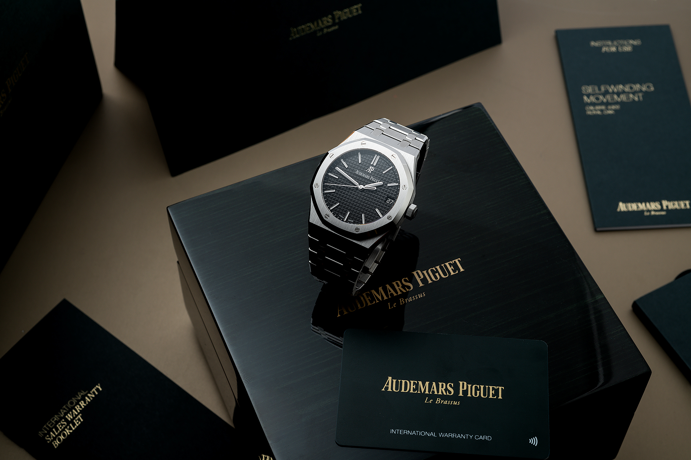
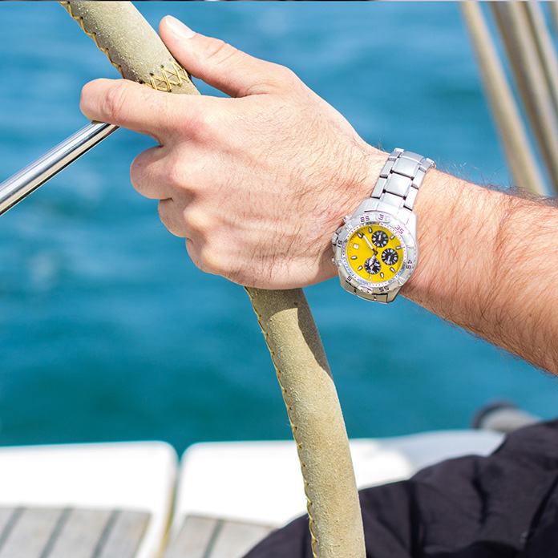

Every exceptional timepiece deserves exceptional care. Our master watchmakers preserve the precision, beauty, and heritage of every watch through meticulous craftsmanship, ensuring it performs flawlessly for generations to come.
Every service is carried out with uncompromising attention to detail, using techniques that honor the tradition of fine watchmaking while meeting the highest modern standards.A luxury timepiece is more than an instrument of time—it is a legacy. Every service is performed with uncompromising precision, preserving its exceptional performance and timeless character for generations.
True craftsmanship extends beyond creation. Through expert servicing and meticulous attention to every detail, we preserve the performance, precision, and enduring beauty of every timepiece.
Our certified master watchmakers combine generations of expertise with meticulous craftsmanship, ensuring every timepiece receives the highest level of care and precision.
Exceptional craftsmanship begins with exceptional expertise. Our highly trained specialists apply generations of watchmaking knowledge to preserve the precision, reliability, and enduring value of every luxury timepiece entrusted to our care.
A luxury timepiece deserves enduring care. Our dedicated after-sales service ensures every watch receives expert attention, preserving its precision, elegance, and legacy for years to come through uncompromising craftsmanship and genuine expertise.
Precision is measured not only by performance, but by longevity. Our commitment to superior craftsmanship and uncompromising standards ensures every timepiece maintains its reliability, beauty, and value for years to come.
The Laurent & Moreau Hi-Care Programme unites exclusive services and priority support to accompany your journey. Elevate your timepiece experience with our dedicated lifetime care.
Learn more
Our International Sales Warranty protects your Laurent & Moreau timepiece against any manufacturing defects. Extend your coverage up to 5 years when you register your watch in our exclusive network.

A complimentary 2-year service protecting your luxury watch from accidental damage and functional impacts. Available for all timepieces acquired through our official boutiques.